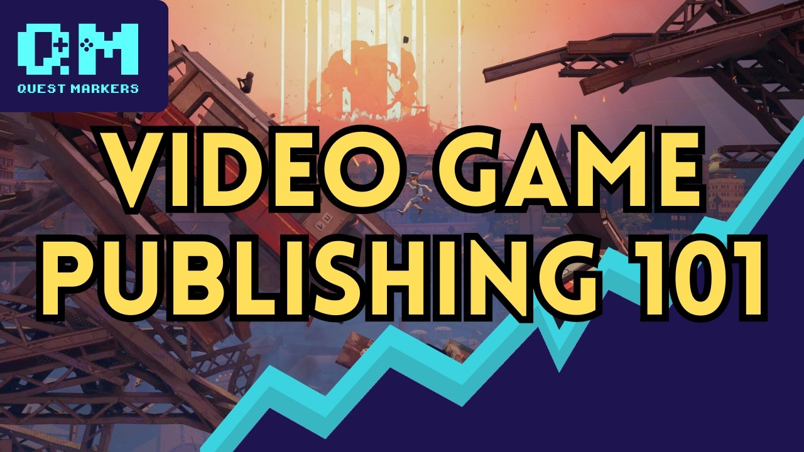

Video Game Publishing 101

In this conversation with Quest Markers, I talk about what goes into getting an independent game funded, from finding the right publisher to making a compelling prototype and understanding the terms of a publishing deal.
I originally got into publishing because I wanted to understand how games get made. What has kept me interested is a slightly different question: why does one game get funded over another? How do publishers recognize something worth championing, and how can developers find an audience for something that hasn't been made before?
I've explored these questions through scouting, production and publishing work with Modus Games, Astra Fund and Astra Logical, Strange Scaffold, Spiral Up Games, Akupara Games and Top Hat Studios.
What I look for in games
I'm particularly interested in games with a strong design thesis. What does this game let you do or experience that other games in its genre don't? I don't think developers need to chase trends, but I do think it helps to understand the games their work is in conversation with.
In the interview, I talk about positioning a game, prototyping around a meaningful interaction, and building in public. Getting feedback early gives developers more room to make informed creative decisions before committing years of their lives to a project.
A few games I've supported
The games I've been fortunate to support span very different creative traditions: the paper-folding puzzles of Paper Trail and the playful spatial logic of Arranger through Astra; the narrative world of Until Then at Modus; I Am Your Beast at Strange Scaffold; Back to the Dawn at Spiral Up; the strange Renaissance collage of Death of the Reprobate at Akupara; and Crypt Custodian and Labyrinth of the Demon King at Top Hat.
My contributions vary across these games, but what interests me about publishing is the opportunity to help distinctive creative work find the resources and audience it needs to exist.